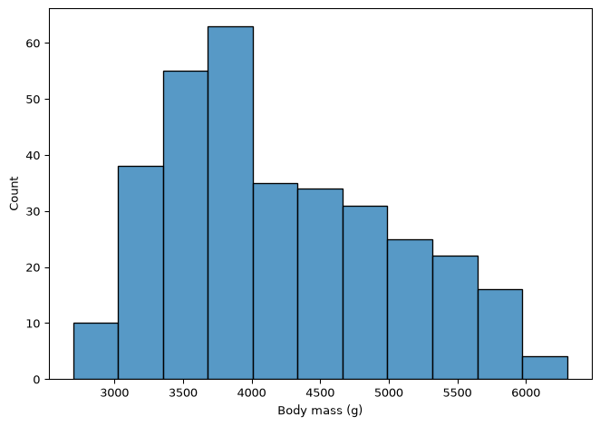
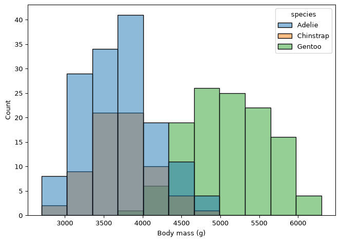
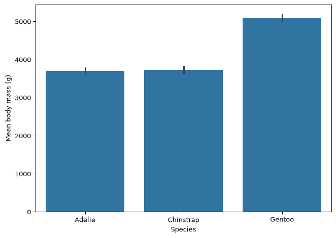

Seaborn draws statistical figures directly from a DataFrame. You name the DataFrame with data=, and then name columns with x=, y= and hue=. Seaborn works out the rest.
This course uses three seaborn functions: scatterplot, histplot and barplot. Those three cover the great majority of what environmental data science figures need. Seaborn has many more, and a selection is listed at the bottom of this page under Beyond EDS 217, for reference rather than for use in class.
Setup
Code
import pandas as pdimport seaborn as snsimport matplotlib.pyplot as pltpenguins = pd.read_csv('https://eds-217-essential-python.github.io/data/penguins.csv')penguins = penguins.dropna()print(penguins.shape)print(penguins.head())
You will see sns.set_theme() in seaborn code elsewhere. It changes the look of every figure you draw afterwards. This course does not call it, so that figures look the same from one session to the next.
1. Scatter Plots
Use a scatter plot to show the relationship between two numeric columns. Each row of the DataFrame becomes one point.
hue= colours the points by a category column. It is the single most useful argument in seaborn, because it can reveal structure that the pooled figure hides.
Compare the two figures above. Pooled together, longer bills look shallower. Within each species, longer bills are deeper. One argument changed the conclusion.
2. Histograms
A histogram takes one numeric column and shows how its values are distributed. The bar heights are counts of rows, so there is no y= argument.
Code
plt.figure(figsize=(7, 5))sns.histplot(data=penguins, x='body_mass_g')plt.xlabel('Body mass (g)')plt.tight_layout()plt.show()

Splitting a histogram by category
Code
plt.figure(figsize=(7, 5))sns.histplot(data=penguins, x='body_mass_g', hue='species')plt.xlabel('Body mass (g)')plt.tight_layout()plt.show()

3. Bar Plots
Seaborn’s barplot has two forms, and it is worth knowing which one you are using.
Form 1: from a DataFrame, with data=
Given a category column and a numeric column, barplotcomputes the mean of the numeric column within each category, and draws a bar for each mean. The vertical line on each bar is a confidence interval.
Code
plt.figure(figsize=(7, 5))sns.barplot(data=penguins, x='species', y='body_mass_g')plt.xlabel('Species')plt.ylabel('Mean body mass (g)')plt.tight_layout()plt.show()

Important
The mean is silent. Nothing in the code above says mean, and nothing in the figure says so either. Say it in your axis label, as above, or your reader will not know what the bar height is.
Form 2: from a Series, with .values and .index
When you already have a result, such as a value_counts() or a grouped mean, you pass its two pieces separately. The values are the bar lengths and the index holds the labels.
Code
counts = penguins['species'].value_counts()print(counts)plt.figure(figsize=(7, 4))sns.barplot(x=counts.values, y=counts.index)plt.xlabel('Number of penguins')plt.ylabel('Species')plt.tight_layout()plt.show()
Putting the categories on the y axis gives their names room to be read left to right. Prefer horizontal bars whenever the labels are words rather than numbers, instead of rotating them.
The same move on a grouped result
Code
mean_mass = penguins.groupby('island')['body_mass_g'].mean().sort_values()print(mean_mass)plt.figure(figsize=(7, 4))sns.barplot(x=mean_mass.values, y=mean_mass.index)plt.xlabel('Mean body mass (g)')plt.ylabel('Island')plt.tight_layout()plt.show()
Seaborn draws onto a matplotlib figure, so every matplotlib labelling command works on a seaborn plot. Call them after the seaborn call.
Code
plt.figure(figsize=(7, 5))sns.scatterplot(data=penguins, x='flipper_length_mm', y='body_mass_g', hue='species')plt.xlabel('Flipper length (mm)')plt.ylabel('Body mass (g)')plt.title('Penguin body mass against flipper length')plt.tight_layout()plt.show()
data= names the DataFrame. x=, y= and hue= name columns, as strings.
histplot takes x= only. The heights are counts.
barplot with data= computes a mean without saying so. Put the word in your axis label.
barplot with x=series.values, y=series.index draws a result you already have.
Horizontal bars for word labels. Rotation is a last resort.
Label the axes with units before you call the figure finished.
Beyond EDS 217
The functions below are not used in this course. They are listed so you recognize them in other people’s code and know what to search for later. The code is shown for reference and is not run here.
# Line plot: for ordered x values, with a confidence band across repeated observationssns.lineplot(data=df, x='year', y='temperature')# Box plot and violin plot: distribution summaries per categorysns.boxplot(data=df, x='species', y='body_mass_g')sns.violinplot(data=df, x='species', y='body_mass_g')# Count plot: a bar chart of value_counts, computed for yousns.countplot(data=df, x='island')# Strip and swarm plots: the individual points behind a box plotsns.stripplot(data=df, x='species', y='body_mass_g')sns.swarmplot(data=df, x='species', y='body_mass_g')# Heatmap: a matrix drawn as coloured cells, often a correlation matrixsns.heatmap(df.corr(numeric_only=True), annot=True)# Pair plot: every numeric column against every other, in a gridsns.pairplot(df, hue='species')# Regression plots: a scatter with a fitted line through itsns.regplot(data=df, x='bill_length_mm', y='bill_depth_mm')sns.lmplot(data=df, x='bill_length_mm', y='bill_depth_mm', hue='species')# Joint plot: a scatter with marginal distributions on both axessns.jointplot(data=df, x='bill_length_mm', y='bill_depth_mm')# Figure-level functions: draw a grid of small multiples from one callsns.relplot(data=df, x='bill_length_mm', y='bill_depth_mm', col='species')sns.catplot(data=df, x='species', y='body_mass_g', kind='box')sns.displot(data=df, x='body_mass_g', col='species')